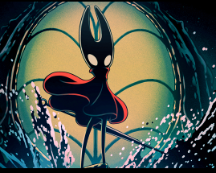

Nova DLC de Hollow knight
Silksong irá receber sua primeira grande DLC, denominada de "Sea of Sorrow" foi confirmada pela Team Cherry como uma expansão gratuita. Previsto para 2026 (Sem data confirmada), irá adicionar novas áreas, novos chefes, itens e ferramentas, sendo uma continuação direta do conteúdo do jogo base, com o tema principal baseado em regiões maritimas!